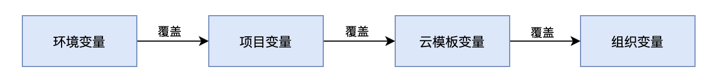

变量管理
变量继承
CloudIaC中的变量可以组织、云模板、项目、环境四个层级中进行设置；
在组织中定义的变量会应用在该组织中所有部署的环境上；
在项目中定义的变量会应用在该项目中所有部署的环境上；
在云模板中定义的变量会应用在所有基于该云模板部署的环境上；
在整个继承链条上同名的变量低层级的值覆盖高层级的值；

当进行环境部署操作时，各层级继承的变量会全部列出，您可以对变量进行重新赋值。
Terraform变量
Terraform变量是Terraform执行时使用的变量，通常在资源描述配置文件里定义好变量的引用；
对于Terraform变量，在环境部署作业发起时将自动将变量加上TF_VARS_前缀，以便让Terraform可以辩识。
环境变量
环境变量通常是用来定义云平台相关的变量，例如云凭证ak/sk、区域、可用区等；
您可以根据不同项目来配置不同云凭证变量，以便管理不同平帐号下的环境资源。
其他变量
其他变量只在『云模板』中进行定义，包含tfvars文件变量和playbook文件变量；
tfvars文件通常是定义不同资源的变量放在不同的tfvars文件中，这样在执行terraform时通过引用不同的tfvars文件来创建不同的资源；
playbook文件是在调用ansible进行应用部署时定义的描述配置文件，您同样可以预先定义好不同的playbook文件对应不同的应用部署，在部署环境时根据传入的playbook文件变量来决定部署何种应用。
敏感信息
在定义变量时，有些变量的值是敏感信息，不方便让所有用户看到，例如云凭证ak/sk或密码等信息，您可以在定义此类变量的值时勾选『敏感信息』复选框；
对于敏感信息变量的值，CloudIaC将全程对此类值进行加密，包括存储和网络传输过程。
选择型变量
选择型变量是指在创建变量时定义了变量的可选值列表，下一级继承该变量时直接选择列表中的值，而不是手动输入。
选择型变量不可设置为敏感类型。
平台导出的环境变量
除了用户配置的环境变量，CloudIaC 还会在执行任务时自动导出当前任务和环境相关的环境变量，这些变量可以在自定义步骤中使用。平台导出的环境变量列表如下：
| 变量名称 | 描述 |
|---|---|
| CLOUDIAC_ORG_ID | 当前任务的组织 ID |
| CLOUDIAC_PROJECT_ID | 当前任务的项目 ID |
| CLOUDIAC_TEMPLATE_ID | 当前任务的模板 ID |
| CLOUDIAC_ENV_ID | 当前任务的环境 ID |
| CLOUDIAC_ENV_NAME | 当前任务的环境名称 |
| CLOUDIAC_ENV_STATUS | 当前环境状态(启动任务时) |
| CLOUDIAC_ENV_RESOURCES | 当前环境中的资源数据(启动任务时) |
| CLOUDIAC_COMMIT | 当前任务的云模板代码 commit hash |
| CLOUDIAC_BRANCH | 当前任务的云模板代码的分支 |
| CLOUDIAC_TASK_ID | 当前任务的 id |
| CLOUDIAC_TF_VERSION | 当前任务使用的 terraform 版本号(eg. 0.14.11) |